Malware Deep Dive – Equation Triple Fantasy
June 24, 2024
An investigation into one part of the highly sophisticated Equation Group APT.
Earlier this year, I was afforded the pleasure of undertaking a static analysis of the Triple Fantasy malware. I am a firm believer that hands-on experience with these types of exercises is crucial in understanding how malware works and how it spreads due to human error.
1. Introduction
Trojan's are sophisticated in that they can evade detection from users very easily, due to technical and complex obfuscation methods employed. My objective for this static analysis is to dissect Triple Fantasy Trojan and develop my understanding for how these particular viruses work in a safe virtual machine environment. This static analysis serves as a starting point for the development of my skills utilising a virtual machine and is a representation of my personal endeavour to contribute to discussions on topics that are still new to me.
By the conclusion of this analysis, a list of responses to the following questions will be provided:
- What is the file type?: Different file types have different behaviours and characteristics so understanding the file type can give insight into how it might behave and what potential vulnerabilities it may exploit.
- Does the file have a packer?: Packed files are created to evade detection from programs like Microsoft Defender and Malwarebytes, so identifying if the sample is packed is really crucial in determining if it's malicious and contains more information that we are unable to see until the sample is unpacked.
- Are there any suspicious strings in the file?: Malware often contains strings that can reveal certain information about its intent or origins, so by searching for suspicious looking strings it can give us clues about the sample’s intentions.
- Are there any encoded strings?: Encoded strings are another common technique used by malware to obfuscate its code. By identifying and decoding these strings, we can discover more information about the sample.
- If the malware is packed, how do we unpack it?: The sample file can be unpacked through malware analytic tool Exeinfo PE which provides information on how to unpack the file. By unpacking the file, we are able to explore the full extent of the sample with all the additional code exposed.
- Is the file definitively malware?: Regardless of the fact that malware has been specifically sought, this still requires a complete analysis to ensure what is being identified can be confirmed as being malware.
The objective of this analysis is to comprehensively address all questions and present a succinctly formatted, readable report.
2. Analytical Tools
This report has been produced with the assistance of a host of analytical malware tools that have allowed the identification of various mechanisms of the Triple Fantasy malware. Such mechanisms that will be explored include decoded strings, and Dynamic Link Library methods calls that signify the files malicious intent and payload. Tools such as pestudio, cmder, in conjunction with commands such as floss and capa have been utilised to create the evidence that you will read in this report.
VirusTotal: file inspection via antivirus enginespestudio: categorized structure and metadata analysisHxD: hex editor for identifying file headerscmder: terminal emulator for command-line toolsfloss: function-level string extractioncapa: detects capabilities and malware behaviorsExeinfo PE: helps detect packers and unpacking methods
All analysis was performed on the file TripleFantasy_9180D5AFFE1E5DF0717D7385E7F54386 using a Windows 10 VM with the FLARE-VM toolkit for safety and snapshot support.
2.1 Methodology
2.1.1 Fingerprinting the Malware
The sample will be scanned using VirusTotal.
Win32/TrojanPacked.Win32Dropper.Generic
This immediate red flag validated that further analysis was necessary.
2.1.2 File Type and Headers
Using HxD, I will analyse the file type to understand its purpose.
2.1.3. Finding Malicious Artefacts
- URL Artefacts: pestudio > cmder (“floss malware.exe > output.txt”: search for ‘http’, ‘.com’, ‘.net’ etc.)
- File Artefacts: pestudio: .dll files
- Packing Artefacts (Raw vs Virtual Size): pestudio
- Code Artefacts: capa: cd Desktop, capa, capa -v, capa -vv
3 Static Analysis
A static analysis is the process of analysing a sample without actually detonating the sample, through various analysis methods. This includes observing the code for any irregularities or suspicious information as well as signs of malicious intent within its function calls.
3.1 Fingerprinting the Malware
Upon deciding on the tools that will be needed for this static analysis, the first step is to utilise VirusTotal to gain an understanding of the file details through antivirus scanning. This analysis can provide us with details regarding the files PE header, hash identifiers, and its programming language. Figure 1 demonstrates this step.
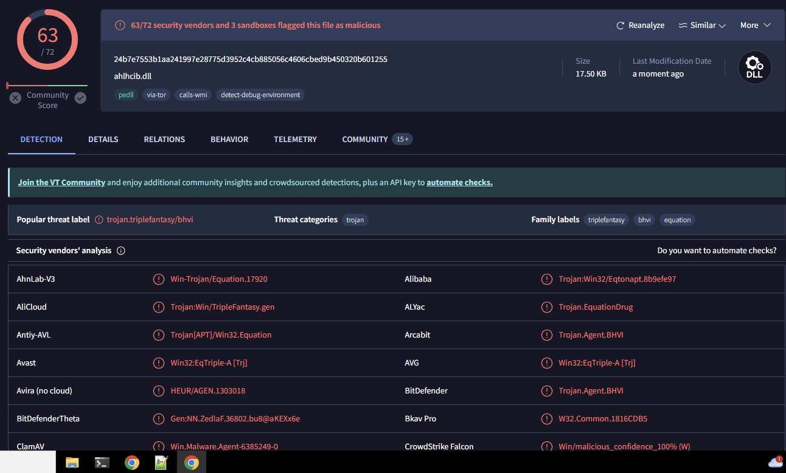
Figure 1: VirusTotal.com scan of sample malware
The above figure displays an interface where after the sample was submitted, the VirusTotal antivirus engines provided additional details as to what may be contained within the infected file. Identifiers such as “Trojan”, “Equation”, and “TripleFantasy”, indicate that these engines have correlated the contents of the file to known malware. This result demonstrates that the sample is indeed malware of some kind.
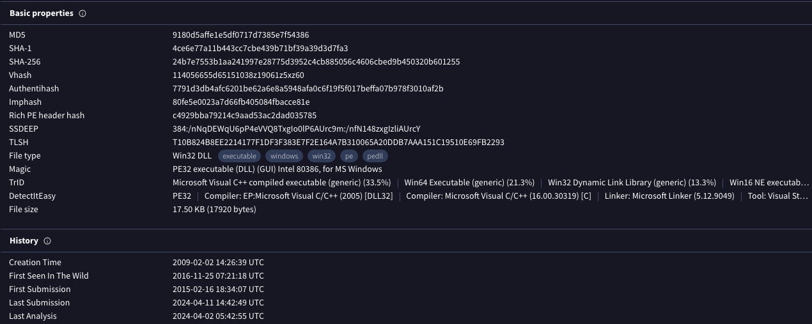
Figure 2: ‘Details’ tab of VirusTotal scan
VirusTotal’s ‘Details’ tab provides us with some additional information with regards to the sample, in particular its hash identifiers which consist of the following:
- 9180d5affe1e5df0717d7385e7f54386
- 4ce6e77a11b443cc7cbe439b71bf39a39d3d7fa3
- 24b7e7553b1aa241997e28775d3952c4cb885056c4606cbed9b450320b601255
This tab also gives information with regards to the type of executable the sample is, which is a portable executable file in 32-bit format. Included in this is a list of all the file names that have been recorded since the files inception. The file name corresponding to my sample is the following:
TripleFantasy_9180D5AFFE1E5DF0717D7385E7F54386
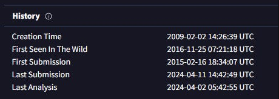
Figure 3: Malware history details
This VirusTotal scan shows that the first time this sample was seen “in the wild” was on 2016-11-25, and the file version is 0.1.2.6 (pictured in Figure 4) with an original name of ahlhcib.dll.
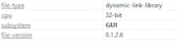
Figure 4: File version shown in pestudio
3.2 Analysing the File Type
The HxD analysis tool has provided some key information with regards to the type of file that the sample is. Denoted through the use of the hexadecimal characters ‘4D’, ‘5A’, as well as the ‘MZ’ header on the right panel, the sample is an executable file.
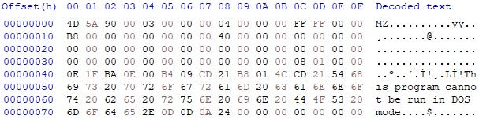
Figure 5: HxD analysis of file with file identifiers
This concludes the fingerprint analysis portion of the report. We have successfully identified the file type, the hash identifiers, file history, and entropy. This serves as the foundation for the remainder of the analysis, of which we will utilise this information to extract more from the sample through more advanced tools.
3.3 Finding Malicious Artefacts: URLs
Utilising pestudio I analysed the sample for any indication of a URL through the various segments of information on the left-hand side of the program (pictured in Figure 5). As demonstrated in my video analysis, I was unable to find a link to a website through this method.
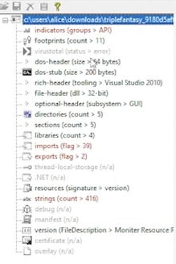
Figure 6: Left-hand side panel of pestudio
To ensure that no items were being missed, I proceeded to conduct an analysis using cmder and the ‘floss’ command. By inputting this code:
floss C:\Users\Alice\Downloads\TripleFantasy_9180D5AFFE1E5DF0717D7385E7F54386
I was able to obtain a list of static strings, and through searching the words ‘http’, ‘com’, and ‘net’ my search came back unsuccessful. With both of these methods employed I am confident that there were no URL’s present in the malware, and it is an OS resource-based malware.
3.3.1 Finding Malicious Artefacts: Files
File artefacts were obtained through the use of floss commands and pestudio, whereby my objective was to discover any deliberately obfuscated files that needed to be encoded. These types of tactics can lead to a high entropy which is an indicator that a file is malware. In practice, when the entropy values are higher than expected (closer to the value 8), there is an assumption of unnecessary complexity occurring within the sample. With an entropy of up to 6.67 (pictured in Figure 6), alongside the encoded strings utilising floss, we can see that the sample is displaying characteristics of malware.
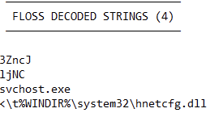
Figure 7: Floss decoded strings
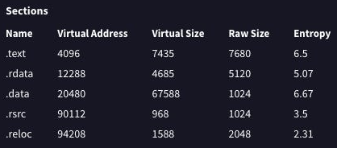
Figure 8: Entropy values within the sample
Through pestudio, we can identify the particular libraries that give the sample certain capabilities and within Figure 9, it should be noted that there are many libraries that have a concerning number of imports, with KERNEL32.dll being the highest at 25. Upon further inspection into these imports, we have a list of ‘blacklisted’ imports (pictured in Figure 10). It must be noted that these don’t inherently confirm whether a file is malicious, however it does explicitly indicate that the sample is calling functions that could be used to perform malicious activities. These are denoted by the ‘flag’ indicator within pestudio.
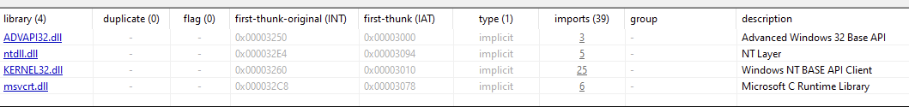
Figure 9: Libraries that are being called within the sample
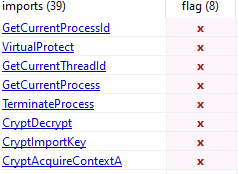
Figure 10: Flagged imports from KERNEL32.dll, and ADVAPI32.dll
Based on my analysis in pestudio, below is a list of strings that whilst they may not be malicious inherently could be used for malicious activities:
WinBomConfigureWindowsFirewall
WinBomConfigureHomeNet
ReleaseSingletons
IcfSubNetsToString
IcfSubNetsIsStringValid
IcfSubNetsGetScope
IcfSetServicePermission
IcfSetProfile
IcfRemoveDisabledAuthorizedApp
IcfRefreshPolicy
IcfOpenFileSharingPorts
IcfOpenDynamicFwPortWithoutSocket
IcfOpenDynamicFwPort
IcfIsPortAllowed
IcfIsIcmpTypeAllowed
IcfGetTickets
IcfGetProfile
IcfGetOperationalMode
IcfGetDynamicFwPorts
IcfGetCurrentProfileType
IcfGetAdapters
IcfFreeTickets
IcfFreeString
IcfFreeProfile
IcfFreeDynamicFwPorts
IcfFreeAdapters
IcfDisconnect
IcfConnect
IcfCloseDynamicFwPort
IcfCheckAppAuthorization
IcfChangeNotificationDestroy
IcfChangeNotificationCreate
HNetSharingAndFirewallSettingsDlg
HNetSharedAccessSettingsDlg
HNetSetShareAndBridgeSettings
HNetGetSharingServicesPage
HNetGetShareAndBridgeSettings
HNetGetFirewallSettingsPage
HNetFreeSharingServicesPage
HNetFreeFirewallLoggingSettings
HNetDeleteRasConnection
DllUnregisterServer*
DllRegisterServer*
DllGetClassObject*
DllCanUnloadNow*
AlgUninstall*(Application Layer Gateway protocols, could enable access to firewall manipulation and network communication.)
* Windows Operating System functions
This list provides an insight into the custom functions that this sample has within its code.
- IcfSubNetsGetScope implies that the sample may be attempting to scrape for IP and network information.
- IcfRemoveDisabledAuthorizedApp implies that the sample may remove authorised applications, and given the network communication focus of this sample it is safe to assume that this may be relating to Windows Firewall.
- IcfOpenFileSharingPorts implies the opening of file sharing protocols, which may be used to propagate the malware across a network.
- IcfGetAdapters implies the retrieval of adapters or interfaces within the infected system.
- HNetDeleteRasConnection implies the removal of remote access connection, which could be used to disconnect or remove VPNs to avoid detection.
- DllUnregisterServer and DllRegisterServer indicates the registering and unregistering of COM object registration information from the Windows Registry.
The insights above suggest that whilst calling system .dll libraries may not be malicious there are still malicious functions that are being used within the sample. The implication of giving privileged access to modify network settings, and read data for sensitive information are all indicators of a malicious program. The call to DllUnregisterServer and DllRegisterServer is especially suspicious, as this could lead to implications with the systems functionality entirely as the Windows Registry is a crucial part of the Windows Operating System.
During the analysis within pestudio, I discovered more alarming functions by which the program had flagged and provided additional information with regards to their legitimate functions.
Sandbox Evasion - Sleep
System Time Discovery - GetTickCount
System Time Discovery - GetSystemTimeAsFileTime
System Information Discovery - ExpandEnvironmentStrings
Process Discovery - GetCurrentThreadId
Process Discovery - GetCurrentProcessId
Process Discovery - GetCurrentProcess
Process Injection - VirtualProtect
Obfuscated Files or Information - CryptImportKey
Obfuscated Files or Information - CryptDecrypt
Obfuscated Files or Information - CryptAcquireContext
This list demonstrates a myriad of time-based behaviour such as GetTickCount, and GetSystemTimeAsFileTime, which may be utilised to execute or delay functions at a particular time to maintain persistence on the infected system. Functions such as CryptImportKey, CryptDecrypt, and CryptAcquireContext heavily imply more malicious activities as these functions refer directly to the Cryptography API (Crypto API) as outlined in Figure 9. This becomes concerning as this directly involves the potential to encrypt and decrypt data, as well as performing tasks that are more cryptographic in nature.
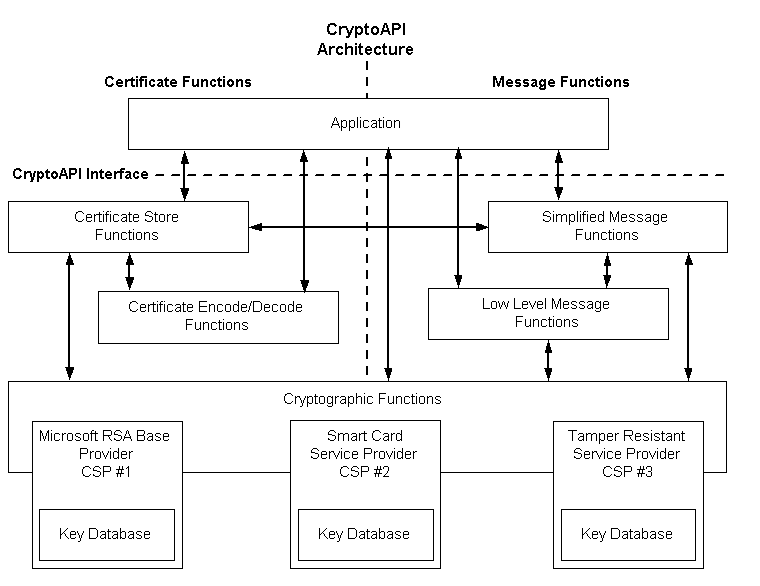
Figure 11: Chart of CryptoAPI tasks
3.3.2 Finding Malicious Artefacts: Packing
My next process was exploring packing artefacts, whereby I used pestudio to look more closely at the sections of the sample. Typically, a packed file will show irregularities within the .text raw-size and virtual-size. If these numbers indicate that the virtual-size is much larger than thse raw-size this can indicate that the file has been deliberately packed or compressed to evade detection. As pictured in Figure 11, there is only a small difference between the raw-size and the virtual-size which implies that the sample has not been compressed.
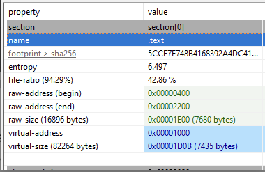
Figure 12: ‘Sections’ tab within pestudio to evaluate raw and virtual address size
In order to cross check this, I imported the sample into Exeinfo.PE and studied the ‘Lamer Info - Help Hint - Unpack Info’ section (pictured in Figure 11) of the interface to reveal that there is no detected compression happening within the sample.
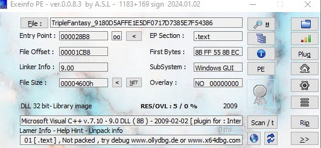
Figure 13: Exeinfo PE interface displaying results of analysis
3.3.3 Finding Malicious Artefacts: Code
After confirming that the sample was likely not packed, I began my analysis of code artefacts through the use of cmder, and the capa commands in order to gain insight into malware behaviour. Through this command:
capa C:\Users\Alice\Downloads\TripleFantasy_9180D5AFFE1E5DF0717D7385E7F54386
This provided me with some fascinating insights with regards to the functions I discovered earlier in my analysis. Malicious activity includes decrypting and encrypting data, reading files, allocation of memory, and manipulating keys all of which indicate that this sample is displaying malicious intent (as pictured in Figure 14).
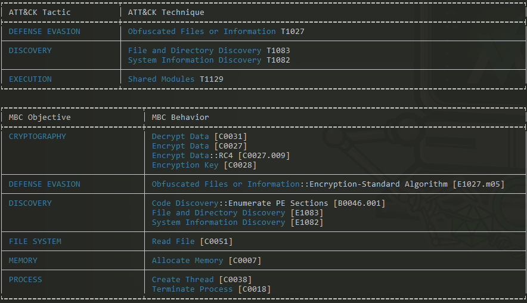
Figure 14: ‘capa’ analysis output data
A further analysis into this sample through the use of the ‘capa -v’ and capa -vv’ commands, pictured in Figure 14, we can observe that the functions CryptAcquireContext, CryptDecrypt, and CryptImportKey (amongst many others) are deliberately used as methods of obfuscation and evasion therefore justifying its existence as malware in lieu of a regular program.
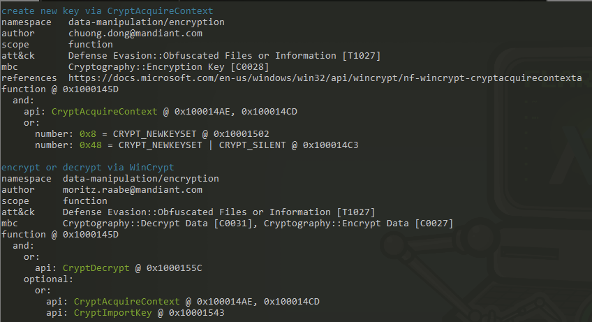
Figure 15: ‘capa -vv’ analysis output data
4. Conclusion
The objective for this research paper was to determine six important factors, which are as follows:
- What is the file type?
- Does the file have a packer?
- Are there any suspicious strings in the file?
- Are there any encoded strings in the file?
- If the malware does have a packer, how do we unpack the file?
- Is the file malware?
This particular sample was an executable file as we can identify the ‘4D’, ‘5A’ values in addition to the ‘MZ’ header indicator. This sample does not have a packer denoted by the proximity between its raw-size and its virtual-size, 7680 and 7435 respectively. I cross checked this with the Exeinfo PE program that concluded that no unpacking was necessary for the sample which indicates that the sample is not packed. This sample did contain some very suspicious strings such as CryptAcquireContext, CryptDecrypt, CryptImportKey, DllUnregisterServer and DllRegisterServer that allude to more malicious activities. As this sample does not have a packer, I did not need to unpack the sample. However, if the sample did have a packer I would have utilised Exeinfo PE to obtain instructions for how to unpack the file and observe its contents. My sample, otherwise known as Equation: Triple Fantasy is malware, which is highlighted through its clear malicious intent, use of obscure custom functions to initiate concerning operations within the system, and code that is borderline unreadable by humans.
4.1 References
- Fox, N. (2021). PeStudio Overview: Setup, Tutorial and Tips. [online] www.varonis.com. Available at: https://www.varonis.com/blog/pestudio. [Accessed on 10 Apr. 2024]
- alvinashcraft (2021). CryptoAPI System Architecture - Win32 apps. [online] learn.microsoft.com. Available at: https://learn.microsoft.com/en-us/windows/win32/seccrypto/cryptoapi-system-architecture. [Accessed on 10 Apr. 2024]
- Microsoft (2024). DllRegisterServer function (olectl.h) - Win32 apps. [online] learn.microsoft.com. Available at: https://learn.microsoft.com/en-us/windows/win32/api/olectl/nf-olectl-dllregisterserver [Accessed 10 Apr. 2024].
- Microsoft (2024). DllUnregisterServer function (olectl.h) - Win32 apps. [online] learn.microsoft.com. Available at: https://learn.microsoft.com/en-us/windows/win32/api/olectl/nf-olectl-dllunregisterserver [Accessed 10 Apr. 2024]
- Kessler, G. (2019). File Signatures. [online] Garykessler.net. Available at: https://www.garykessler.net/library/file_sigs.html. [Accessed 10 Apr. 2024]
- malwarenailed, Suspicious Strings in Memory. (8 Jun. 2019). Suspicious Strings in Memory. [online] Available at: https://malwarenailed.blogspot.com/2019/06/suspicious-strings-in-memory.html [Accessed 5 Apr. 2024].
- Depaul.edu. (2023). Available at: https://condor.depaul.edu/glancast/443class/docs/vbox_host-only_setup.html#:~:text=A%20VirtualBox%20host%2Donly%20adapter. [Accessed Apr. 5 2024]
- Candan BOLUKBAS (2017). Malware Analysis Part #1: Basic Static Analysis. YouTube. Available at: https://www.youtube.com/watch?v=SIem8ZIe1xk. [Accessed Apr. 5 2024]
- VirusTotal (2024). VirusTotal. [online] Virustotal.com. Available at: https://www.virustotal.com/gui/home/upload. [Accessed 5 Apr. 2024]
- Techtuber, S. www.youtube.com. (3 May. 2023). Static Malware Analysis using PEStudio. [online] Available at: https://www.youtube.com/watch?v=Kz7Aw-2sCWI. [Accessed 5 Apr. 2024].
- ytisf. (15 Dec. 2014). theZoo/malware/Binaries/EquationGroup.TripleFantasy at master · ytisf/theZoo. [online] Available at: https://github.com/ytisf/theZoo/tree/master/malware/Binaries/EquationGroup.TripleFantasy [Accessed 5 Apr. 2024].